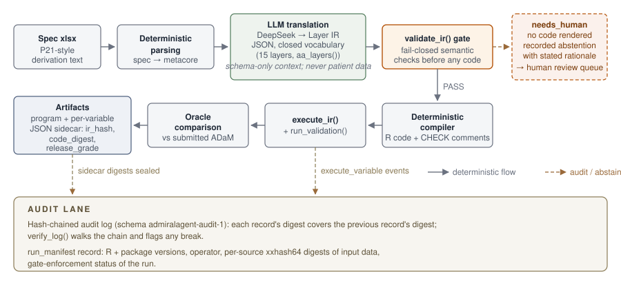

Anatomy of a Derivation
Source:vignettes/articles/anatomy-of-a-derivation.Rmd
anatomy-of-a-derivation.RmdThe CDISC pilot 5 showcase
reports aggregate numbers: how many variables automated, how many
abstained, how many matched the oracle. This article opens the black box
on three individual derivations from the same run and follows each one
through the full chain — spec text, Layer IR, gate result, rendered
code, execution status, oracle number. Every quote below is verbatim
from a machine file under demo/automation/out/ (or from the
package sources, where cited). Nothing is paraphrased from memory.
The reason the chain is worth dissecting at all: the LLM
never writes code. DeepSeek only translates spec free text into
the closed-vocabulary Layer IR (JSON; 15 layers, registered in
R/layers.R aa_layers()), and
build_context() sends schema-level spec text only — never
patient data. A fail-closed semantic gate (validate_ir())
checks the IR, and a deterministic compiler renders the
admiral code from it. The review surface is therefore the
IR plus its deterministic projection, not a language model’s free-form
output.

Case 1 — ITTFL: the full happy path
ITTFL (Intent-To-Treat Population Flag) is the variable the showcase
calls out as the one end-to-end conversion delivered by the newest
layer, assign_conditional. Here is the whole chain.
Spec text. The derivation column of the P21-style
spec (out/spec_adsl.csv, ADSL/ITTFL row, also cached in
out/spec_adsl.rds):
Y if ARMCD ne ' '. N otherwiseLayer IR. What DeepSeek translated it into, verbatim
from out/ir_llm.rds (printed as JSON):
[{"dataset":"ADSL","variable":"ITTFL","steps":[{"layer":"assign_conditional","args":{"target":"ITTFL","condition":"ARMCD != ' '","true_value":"Y","else_value":"N"}}],"spec_origin":"Y if ARMCD ne ' '. N otherwise","confidence":0.85,"needs_human":false,"rationale":"Y where ARMCD is non-blank, N otherwise; ARMCD is present in ADSL from dm base. Condition uses comparison against a blank string literal."}]One step, one closed-vocabulary layer, explicit confidence, and a
rationale that explains the semantics the translator chose. Note that
the IR is semantic, not textual: ARMCD != ' ' is a
gate-validated condition expression, not an arbitrary string the model
made up.
Gate. validate_ir() accepted the chain
— out/gate_report.json records "gate": "PASS"
for the ADSL/llm backend.
Rendered code. The deterministic compiler’s output,
verbatim from the artifact
out/artifacts/llm/adsl__ittfl__496bd0eb.R — every line,
including every comment:
# DISCLAIMER: DRAFT CODE - qualified human review required before use.
# ---- ITTFL | step 1/1: assign_conditional ----
# Spec origin: "Y if ARMCD ne ' '. N otherwise"
# Agent rationale: Y where ARMCD is non-blank, N otherwise; ARMCD is present in ADSL from dm base. Condition uses comparison against a blank string literal.
# Confidence: 0.85
# CHECK: flag variable should be set for at least some records (not all-NA, not all-set)
# CHECK: derived values must be a subset of the spec codelist (verify vs metacore)
ADSL <- ADSL |>
dplyr::mutate(ITTFL = dplyr::case_when(
ARMCD != ' ' ~ "Y",
TRUE ~ "N"
))
# CHECK: human must confirm the condition semantics and the else branch (NA vs "") before useThe code carries its provenance in-band: the spec text it came from, the agent’s rationale, the confidence, and three CHECK comments telling the reviewer exactly what a machine could not confirm. The reviewer reads 13 lines, not a diff against a mystery.
Execution and oracle.
out/exec_status_llm.csv records
"ITTFL","EXECUTED"; out/validation_llm.csv
records the automated flag_rate check as PASS (the codelist
check is, by design, MANUAL — “compare against spec
codelist”). The oracle comparison,
out/accuracy_llm.csv:
"ITTFL","compared",100,NA,254,"na_agree=1.00"One hundred percent value agreement on the 254 joined subjects. Spec text in, oracle-aligned executable derivation out, with a full evidence trail between them.
Case 2 — SAFFL: fail-closed abstention
SAFFL (Safety Population Flag) is the same kind of variable, one idea
harder. Its spec text (out/spec_adsl.csv, ADSL/SAFFL
row):
Y if ITTFL='Y' and TRTSDT ne missing. N otherwiseThe IR the LLM returned (out/ir_llm.rds):
{"dataset":"ADSL","variable":"SAFFL","steps":[],"spec_origin":"Y if ITTFL='Y' and TRTSDT ne missing. N otherwise","confidence":0.3,"needs_human":true,"rationale":"Condition requires a missingness check (TRTSDT ne missing) and setting 'N' otherwise; the filter sublanguage cannot express is.na()-style missingness checks, so this must be routed to human review."}steps is empty. The translator recognised that the
derivation needs an is.na()-style missingness check, that
the closed filter sublanguage cannot express one, and said so — with
confidence 0.3 and a stated reason. No code is rendered. Downstream,
out/exec_status_llm.csv records
"SAFFL","REVIEW","needs human decision",
out/validation_llm.csv records
needs_human / MANUAL / "routed to human review", and
out/accuracy_llm.csv records
"SAFFL","not_produced".
An abstention is not a failure; it is a queue entry with the decision
the human has to make spelled out in the rationale. The alternative is
guessing — and the showcase’s free-form comparison arm shows what
guessing looks like. In that arm the same model, writing R directly,
happily generated SAFFL code: 18 lines for a variable the constrained
pipeline refused to touch. It ERRORed at execution
(out/compare_exec_status.csv:
! object 'ITTFL' not found) — loud, that time. But for the
sibling variable VISNUMEN the free-form arm silently executed and
produced values with 0% oracle agreement
(out/compare_summary.json,
freeform.silent_error_variables /
silent_error_detail:
"variable": "VISNUMEN", "value_agree": 0) — the constrained
IR abstained on it instead. The full arm-vs-arm analysis is in the IR vs free-form article.
Fail-closed is not the absence of output. It is recorded, reasoned refusal.
Case 3 — the renamed-column gate (finding F-01)
The third case is a mistake the system used to make — and now catches
before any code exists. In an earlier showcase run the LLM produced this
two-step chain for TRTSDT: merge SVSTDTC from SV onto ADSL
under the new name TRTSDT, then impute the date from…
SVSTDTC, the old name that no longer exists on ADSL. Before
F-01 was fixed, that chain passed validation and exploded only at
execution. The regression fixture now lives in
tests/testthat/test-renamed-columns.R:
# The verbatim F-01 chain from the pilot5 showcase: SVSTDTC is merged onto ADSL
# as TRTSDT, then impute_dtc still points at SVSTDTC on ADSL.
f01_ir <- function() {
list(new_variable_ir("ADSL", "TRTSDT", list(
new_step("merge_var", list(
target = "TRTSDT", source = "SVSTDTC", dataset_add = "sv",
by_vars = c("STUDYID", "USUBJID"), order = "SVSTDTC", mode = "first",
filter = "VISITNUM == 3"
)),
new_step("impute_dtc", list(
target = "TRTSDT", dtc = "SVSTDTC", output_class = "dt",
highest_imputation = "D", date_imputation = "first"
))
)))
}validate_ir() now tracks merge renames across steps and
rejects the chain at the gate. The verbatim problem message
(R/ir.R, format string applied to this fixture):
[TRTSDT step 2] references column 'SVSTDTC' on dataset ADSL, but an earlier merge brought that column in as 'TRTSDT'; reference the new nameThree things to note about that message. It fires
before any code is rendered or run — the fail-closed
line moved from the execution layer into the semantic gate. It names
both the old and the new column, so the fix is a one-word edit. And it
is pinned by an executable regression,
tests/testthat/test-renamed-columns.R, which also pins the
legitimate cases (referencing the new name, self-merges, re-reading the
old name from the source dataset, cross-variable
references).
Contrast this with free-form code generation. There, the equivalent
class of mistake either explodes at runtime — loud, acceptable — or, in
the worse variants like wrong filter logic, passes silently and produces
wrong values with no signal at all. The ir-vs-freeform comparison
measured 4 such silent wrong answers in the free-form arm across 49 spec
variables (out/compare_summary.json:
freeform.silent_errors: 4, vs the constrained arm whose 4
mechanically-flagged “silents” are all the documented F-05 oracle
rounding family). Catching a bad reference at the gate with a naming
hint is what that difference looks like at the level of one
derivation.
What the artifacts remember
Every rendered program carries a JSON sidecar, and every execution
appends to a hash-chained audit log. Both are quoted here verbatim (long
digests trimmed with …).
The sidecar
out/artifacts/llm/adsl__ittfl__496bd0eb.R.json:
{
"artifact": "adsl__ittfl__496bd0eb.R",
"package_version": "0.1.0",
"backend": "llm-deepseek",
"model": "deepseek-chat",
"ir": [ { "dataset": "ADSL", "variable": "ITTFL", "steps": [ … ],
"spec_origin": "Y if ARMCD ne ' '. N otherwise", "confidence": 0.85,
"needs_human": false, "rationale": "…" } ],
"ir_hash": "fd9bb37a",
"code_digest": "11941647bde6654315af0e04e929d73a088aae3fd641751cb5063e4d9439ab4f",
"gate": null,
"release_grade": "ungated-draft",
"gate_enforced": null,
"validation": null,
"created_at": "2026-10-01T20:05:15-0400",
"disclaimer": "DRAFT generated code; human review required before regulated use"
}The sidecar embeds the IR itself, plus two digests.
ir_hash is computed over the canonical IR — so editing the
sidecar afterwards (flipping needs_human to
false, say) breaks the seal: read_artifact()
rejects an artifact whose embedded IR no longer hashes to
ir_hash. code_digest binds the rendered code
to the same record. The artifact self-labels its release grade:
"ungated-draft", with the matching disclaimer, because the
showcase is an unattended run written with
require_gate = FALSE — an explicit, recorded opt-out,
stated in out/gate_report.json:
"gate_policy": "Package default is gate-required. Programs here are written with require_gate = FALSE (explicit opt-out, no human approver in an unattended showcase). They are permanently self-labelled UNGATED DRAFT and never release-grade."The audit log. First record of
out/execute_llm.jsonl:
{"schema":"admiralagent-audit-1","seq":1,"time":"2026-10-01T20:05:46-0400","package_version":"0.1.0","event":"execute_variable","details":{"run_id":"run683c28ad5b09","dataset":"ADSL","variable":"STUDYID","status":"EXECUTED","layers":"assign","note":""},"prev":"0000000000000000000000000000000000000000000000000000000000000000","mode":"sha256","digest":"198b0e72485dc9c3da3a0b3ba7b26e17fce3757a8a8ad0eaa53148c99022fed4"}prev is all zeros on the genesis record; every later
record’s digest covers its own content and the
previous record’s digest, so deleting or rewriting any record breaks the
chain from that point on — verify_log() walks the chain and
says so. The same log closes with a run_manifest record
(seq 50) that pins the environment and the inputs: R version, package
versions, operator, and per-source xxhash64 digests and shapes of the
SDTM data that fed the run:
{"schema":"admiralagent-audit-1","seq":50,"event":"run_manifest","details":{"manifest_schema":"admiralagent-manifest-1","run_id":"run683c28ad5b09","r_version":"R version 4.6.0 (2026-04-24 ucrt)","packages":{"admiral":"1.5.0.9011","metatools":"0.3.0","dplyr":"1.2.1","rlang":"1.3.0"},…,"source_data":[{"source":"base","rows":306,"cols":25,"columns":[…],"digest":"xxhash64:6aeb909cce25d84b"},{"source":"dm",…,"digest":"xxhash64:6aeb909cce25d84b"},{"source":"ex",…,"digest":"xxhash64:011a6b5c369aa767"},{"source":"vs",…,"digest":"xxhash64:64dad7bc779481b8"},…],…,"gate_enforced":false,…}}Re-run the pipeline on tampered source data and the manifest digests change; the provenance of what the oracle number was computed against is part of the record, along with the gate-enforcement status of the run.
What is actually being archived. This is the design
point that ties the three cases together (DESIGN.md §6,
security model, point 7 — translated): the audited, signed, archived
artifact is the IR itself — not the generated code, and
not the LLM’s trajectory. The LLM never writes R code; the code is a
deterministic projection of the IR, so the same IR always projects to
the same code (code_digest above). There is no need to
archive prompts, temperatures, or trajectories to explain a derivation:
the IR, its spec_origin, its rationale, and its hash
are the explanation.
What this buys in a GxP context — and what it does not
For a regulated workflow the practical consequences are:
- The review surface is small and structured. A reviewer reads the IR (closed vocabulary, one page of JSON per variable) plus the rendered code with its CHECK comments, instead of auditing free-form LLM output. Case 1’s entire program is 13 lines, three of which tell the human what to verify.
- Every refusal is recorded. Case 2’s abstention is a first-class, reasoned queue entry — visible in the gate report, the execution status, the validation table, and the accuracy file — not an omission you have to notice.
- Every artifact self-labels. Release grade, gate-enforcement status, backend, model, IR hash, and code digest travel with the code; tampering with the record invalidates it, and the hash-chained audit log plus run manifest make the execution itself replayable and checkable.
And the honest limits, unchanged from the showcase: everything here
is a single model (DeepSeek deepseek-chat), a single study
(pilot5 ADSL), and one stochastic run — REPORT.md
limitation 8 states verbatim: “Single model, three datasets, and
stochastic. Numbers are for DeepSeek deepseek-chat on
pilot5 ADSL/ADAE/ADLBC only; they do not transfer to other models or
datasets without re-measurement.” Abstention counts are
run-variable. Oracle agreement is not double programming. And the
showcase programs are ungated drafts by explicit opt-out — demonstration
output, not release-grade deliverables.
See also
- CDISC Pilot 5 Automation Showcase — the aggregate numbers and limitations for the run these cases come from.
- Constrained IR vs free-form code generation — the controlled arm-vs-arm experiment.
- The package repository, including
demo/automation/with all cited machine files: https://github.com/yanmingyu92/admiralagent